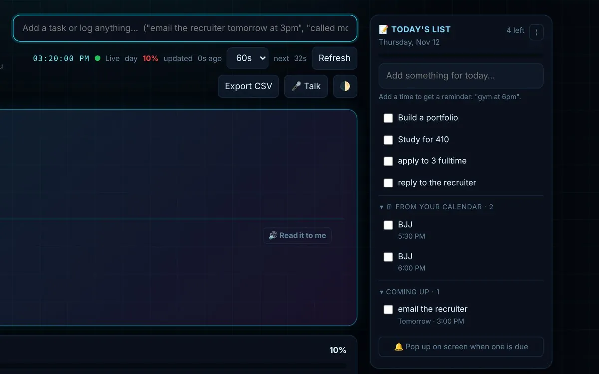
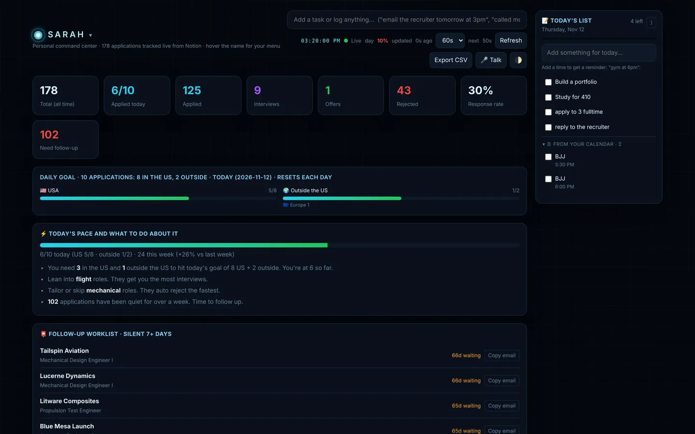
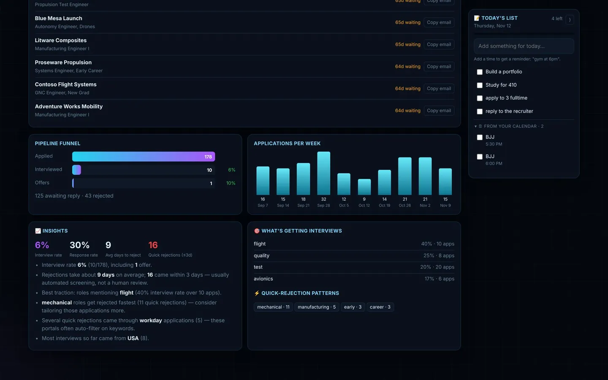
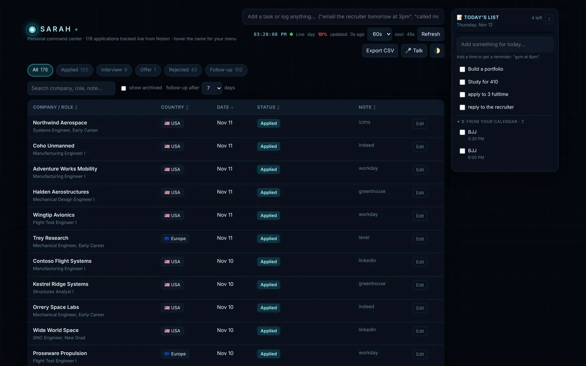
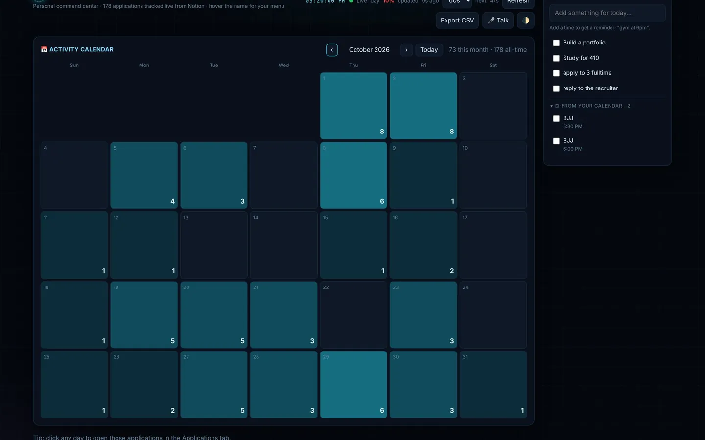
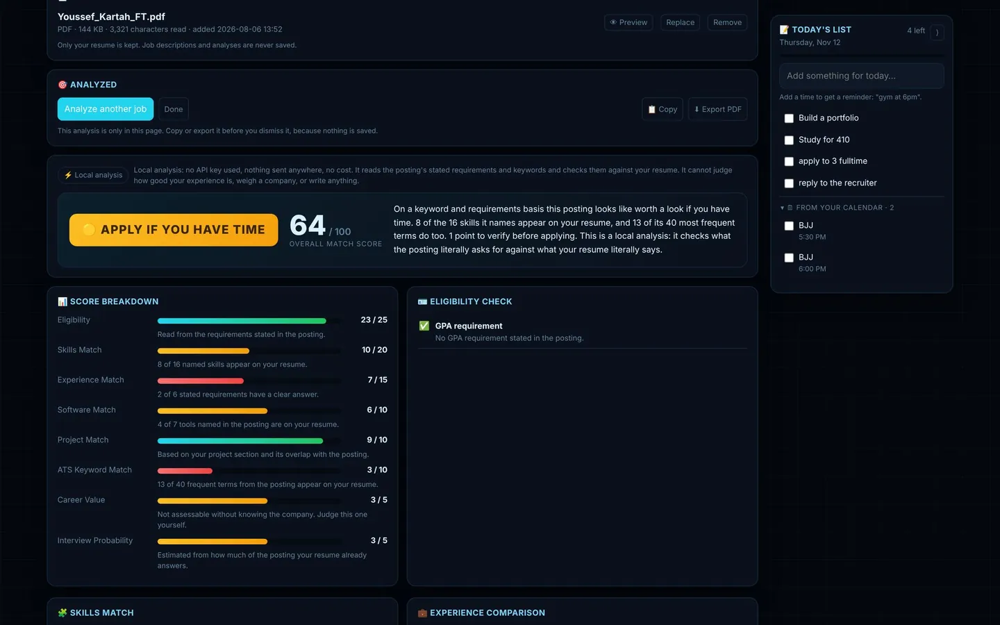
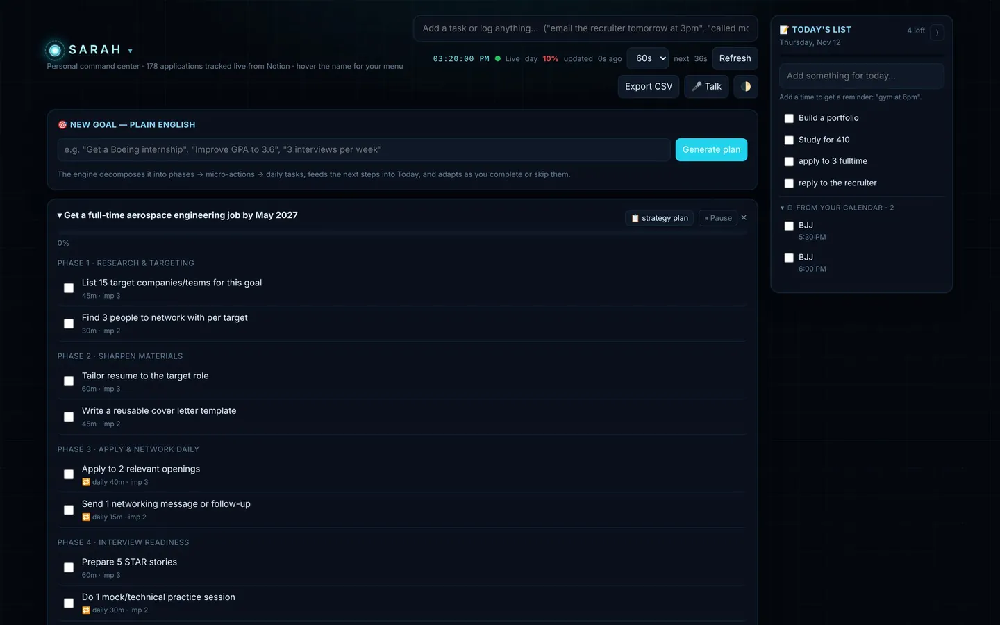

Personal software · June to October 2026
ApplyAI: a command center for my job search
ApplyAI began as a React prototype that scored job postings against my résumé. It grew into a dashboard on my laptop, later renamed SARAH, that holds my job search and my daily routine on one screen. It is built on one rule: score yourself only on the inputs you control.
- Status
- In personal use runs on my laptop
- My part
- All of it, built with Claude Code as a pair programmer.
- Team
- Solo.
- Tools
- Python · One HTML page · Notion API · Gmail and Calendar APIs
Where it stands · October 2026
It runs on my laptop and holds my job search. The screens below use sample data, not my real applications.
- 47
commits, June 7 to October 28
From the repository - 2
files: one Python server and one HTML page
From the repository - 6,841
lines across the two
From the repository - 10a day
applications is the number it holds me to: 8 in the US, 2 outside
01The idea
A job search is hundreds of small actions. I wanted one place that tells me the next one.
Applying for full-time roles while finishing a degree means hundreds of applications, each with its own emails, dates and status. A spreadsheet could store them. It could not tell me what to do this morning.
So the tracker became a dashboard: it reads the applications, works out today's pace and who needs a follow-up, and puts one next move at the top of the screen.
I built it with Claude Code, and the commit history says so: the commits are co-authored.
- Inputs, never outcomesIt scores what I did today: applications sent, training done. Replies arrive on their own schedule.
- Local firstIt runs on my laptop. The features that call an outside AI are opt-in, and the core works without them.
- Two filesOne Python server and one HTML page, so I can read all of it.
02The screens
Eight screens, from the first one I open each day
Today
The first screen answers one question: what do I do next? Under it sit the day's numbers, and every one of them is an input I control.

Say it in a sentence
Type "email the recruiter tomorrow at 3pm" and it becomes a dated task with a reminder. The same bar logs anything else.

Pace and follow-ups
Progress against a daily goal of 10 applications, 8 in the US and 2 outside, and a worklist of applications that have been silent for a week, each with a follow-up email ready to copy.

What is working
The funnel, applications per week, which kinds of roles get interviews, and which ones reject within three days.

Every application
One table for all of them. Notion is the source of truth, and edits made here are kept on the laptop on top of it.

Activity calendar
A month at a glance: how many applications went out each day.

Resume Match
Paste a posting and a local engine scores it against my resume by stated requirements and keywords. No API key, and nothing leaves the laptop.

Goals
Write a goal in plain English and it becomes phases and daily steps that feed the Today screen.

The real app, running locally. The applications on these screens are sample data with invented companies, and the faith, family, school and money views are left out on purpose.
03Architecture
Notion holds the truth, the laptop does the thinking
Select a block in the drawing, or a button, to see what it does.
04History
Five months, commit by commit
Select a point on the chart, or a date, to see what changed in that commit.
05Problems and fixes
Six problems, and how I worked through them
A tracker I had to feed by hand
Every reply meant opening the tracker and updating a row, and a tracker that depends on me remembering falls behind within days. The emails already hold the status. The risk is an old or automatic email overwriting newer news.
I wrote a Gmail sync that files each application under its email thread and runs a status machine that only moves forward. A day later I moved the tracker itself into Notion and made it the single source of truth, with the dashboard as a reader. A late "thanks for applying" can no longer undo an interview, and there is one copy of the data instead of several.
Measuring the wrong thing
By September the app had a planner, an inbox, habits, a deep-work timer and budgets. It measured many things, and few of them were things I could act on today. A reply arrives weeks after the work that earned it, so the only thing I can actually do today is the input.
I rebuilt the app around lead measures. The daily goal is 10 applications, 8 in the US and 2 outside, counted live from the tracker. The planner, inbox, habits, timer and budgets came out. That was one commit: 1,431 lines added and 828 removed From the repository.
Applications that vanished
I archived one application and several others disappeared with it. I reproduced it before touching anything: four identical rows and one archive click turned six rows into two. That pointed at how a row was identified. Rows were keyed by company and position, in lowercase.
I changed the identity to the Notion page id, kept old edits only where they still pointed at exactly one row, and added a read-only diagnostic script. Archiving now hides one row, and the header counts what is hidden. Try both versions.
6rows showing
| Company and role | Applied | Stored under | Action |
|---|
Archive any one of the four identical rows.
My own server, handing out my keys
The app was starting to hold course and brokerage data, and its server would send key files to anyone who asked the right way. A list of forbidden files only stops what I thought to put on it. A list of allowed things fails closed.
The server now serves exactly one page. Its API refuses requests that come from another site and bodies that are not JSON, the page cannot be framed, new files are readable only by me, and an old helper that listened on every network interface is gone.
| Request | Before | After | Why |
|---|---|---|---|
| GET the dashboard page | Served | Served | The one page the server exists to serve. |
| GET a key file with an encoded underscore | File sent | Not found | The old blocklist compared the raw address. An encoded underscore did not match the list, so the file went out. |
GET /.git/config | File sent | Not found | The repository's own folder was downloadable too. Serving only one page closes this without listing it. |
| HEAD a blocked file | Check skipped | Not found | The old check ran on GET requests. A HEAD request went around it. |
| POST to the API, from another site | Accepted | Refused | A page on another site could call the local API from my browser. The API now refuses requests marked cross-site, or with a foreign or missing origin, and anything that is not JSON. |
| GET the page, inside a frame | Allowed | Denied | Another site could have loaded the dashboard inside an invisible frame. |
Features that needed a paid key
The first Resume Match needed an AI API key. No key, no feature, and every use had a cost. The useful core of each feature is simple enough to run locally, so the AI should be an upgrade I can switch on.
I rebuilt Resume Match as a local engine that reads a posting's stated requirements and keywords and checks them against my resume, with the AI review as an opt-in. The voice assistant follows the same rule: it always works by pattern matching, with Claude as an optional brain. The core runs with no key and sends nothing anywhere, and the match screen says plainly what a local analysis can and cannot judge.
Where it started: ranking postings
The very first version was a React prototype called ApplyAI: a live job feed scored against my resume. Asking for jobs from the last 3 days returned nothing, because new postings take time to be indexed. Fresh matters, but it should be a weight in the ranking instead of a filter that empties the feed.
I pulled the past week of postings and blended match with freshness: 65% match score, 35% how recently it was posted. The formula is straight from the prototype's code.
The ranking formula
rank = 0.65 × match + 0.35 × freshness, where freshness = max(0, 100 − 3.5 × hours since posted).
A strong match posted 3.4 days ago (match 82) scores 53.3. A weaker match posted this morning (match 50, 10 hours old) scores 55.3, so the fresher posting ranks first. The feed is never empty, and it still favors new postings. Calculated
06Limits
What this page does not claim
- The screens are sample data. The companies are invented, and some views are left out on purpose.
- It scores inputs, not outcomes. By design it cannot tell me whether ten applications a day is the right number.
- The ranking weights are the prototype's. This page does not claim they are optimal.
- It was built with an AI pair programmer. Claude Code co-authored the commits, and I read and directed all of it.
07What I took from it
Four things I took from building it
- Measure what you control.Ten applications is a day I can finish. An interview is something that happens to me later.
- Identity is a design decision.Calling two rows the same because they look the same cost me data on screen. Every record needs a name that only it has.
- Running locally is not the same as being safe.A server on my own laptop still answers whoever can reach it. Allow what is needed and refuse the rest.
- Removing is building.The best single commit took 828 lines out. The app got better when it did less.